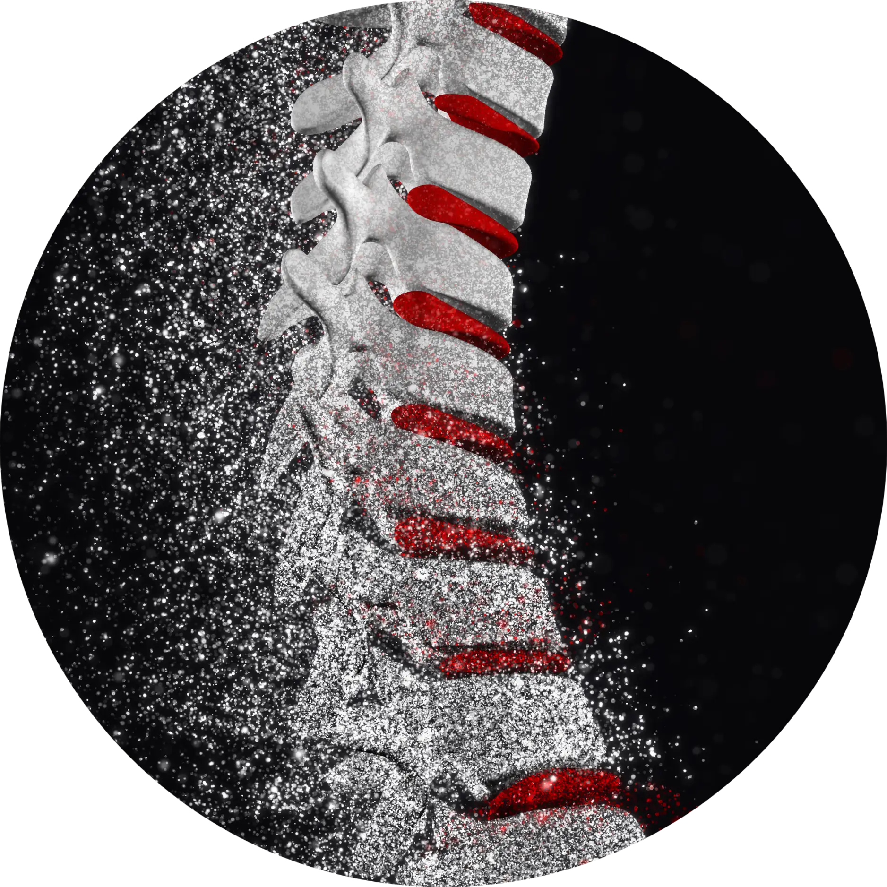
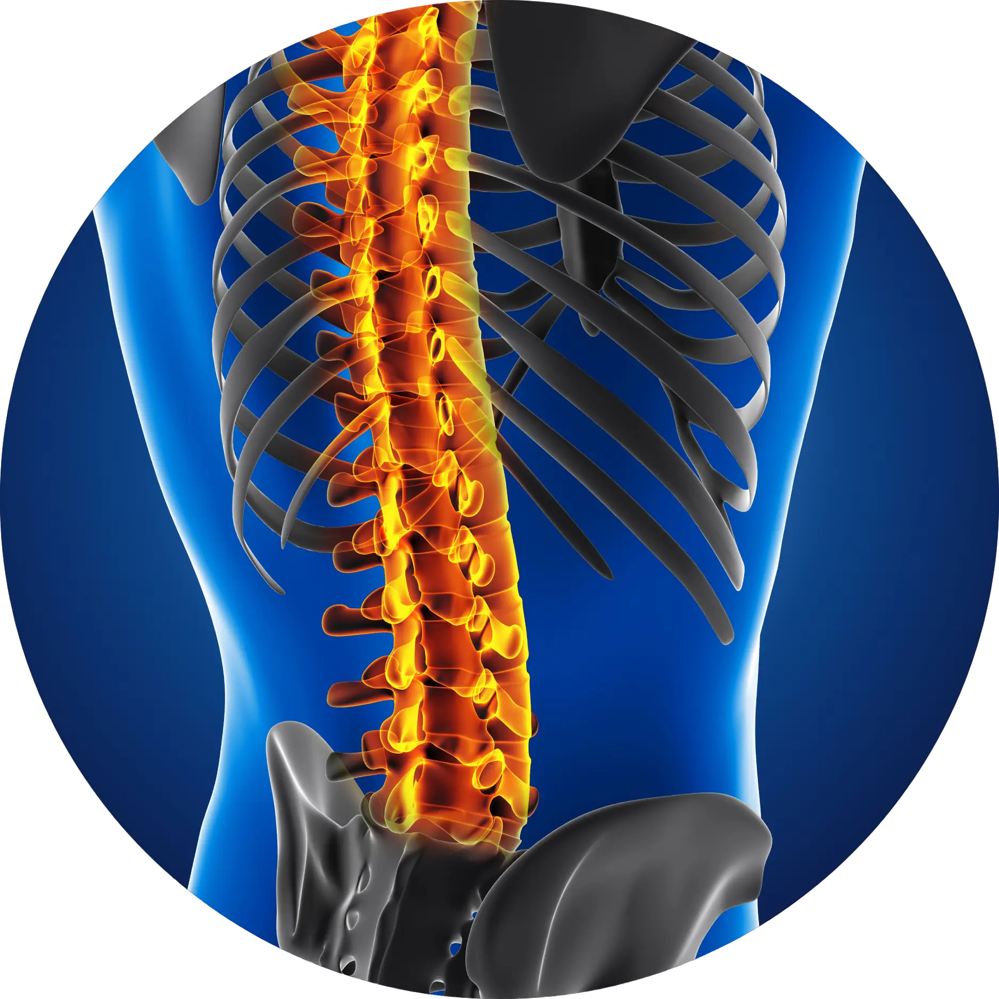
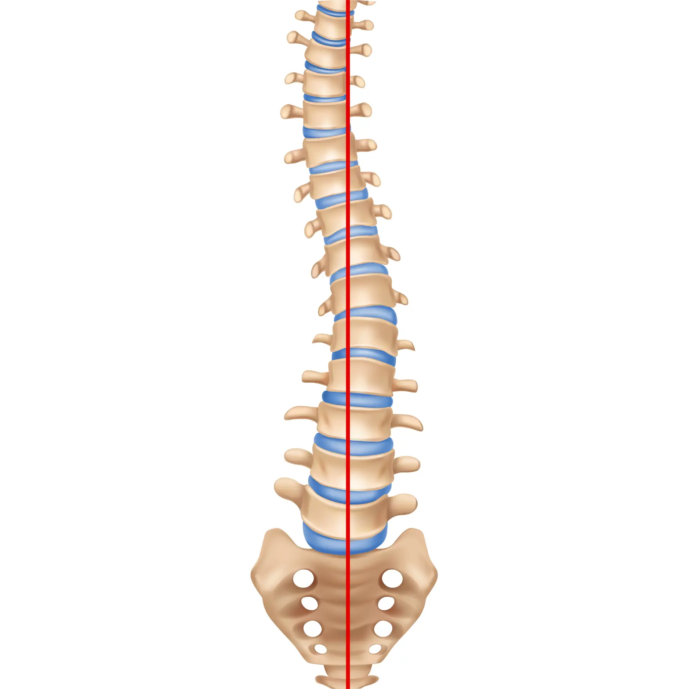
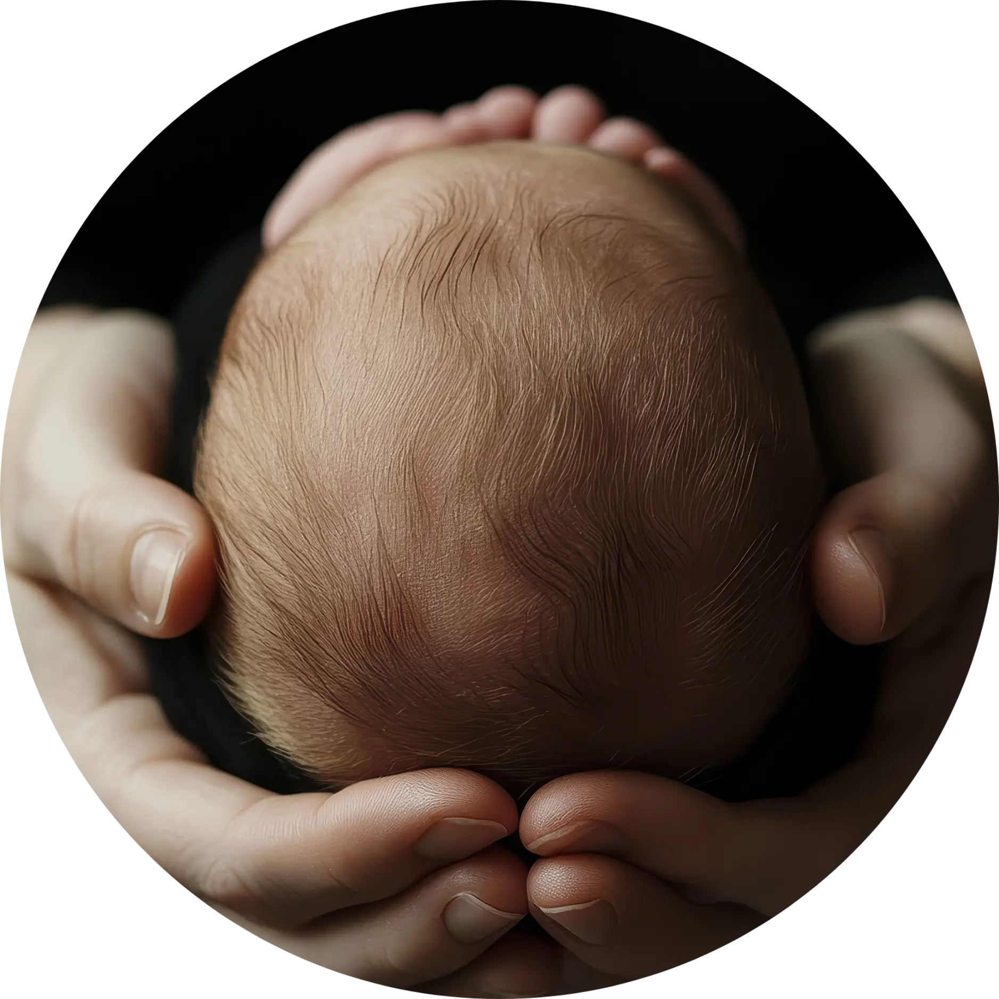
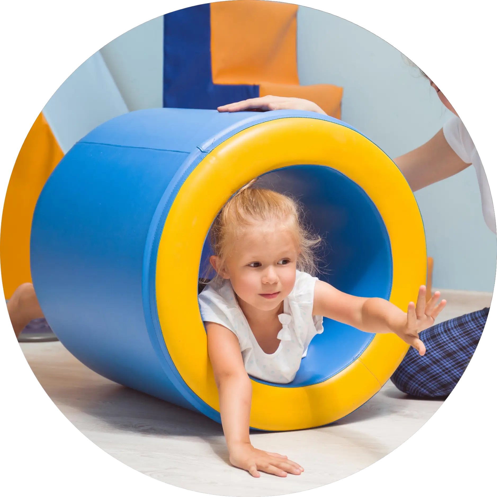
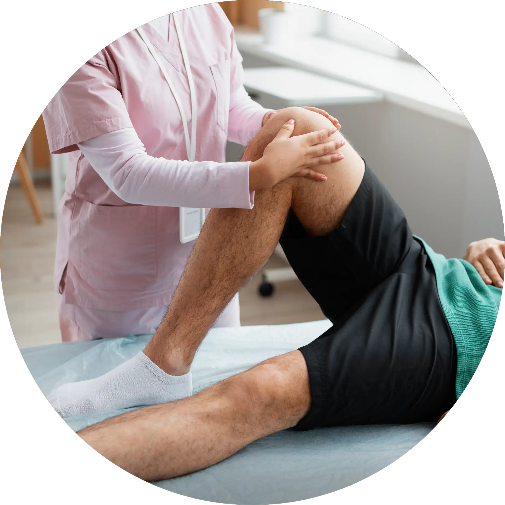

2025
Clinical Supervisor Schroth Therapy
Novi-Sad, Servië


2024
Step-In SMA
2024
General Movements Assessment
(GMA)

2023
ISST Schroth Therapy
2022
Kinderfysiotherapie bij Positionele Schedeldeformaties
Skully Care


2022
SchrijvenNL - Module 2
2018
Master Pediatric Physical Therapy
Avans+ in Breda


2014
Bachelor of Health, Fysiotherapie
Hogeschool van Amsterdam